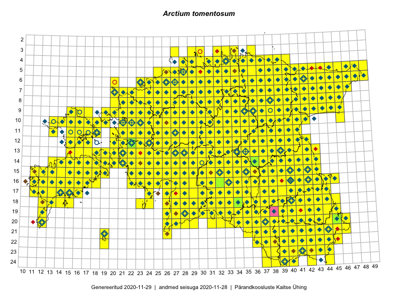

Arctium tomentosum
Uuendatud: 2016-12-02
Kaardile koondatud taksonid: Arctium tomentosum Mill.

Kaart põhineb 921 vaatlusel. Taksonit on leitud 464 ruudust.
Kuvatud viited 20 esimesele andmebaasikirjele, ülejäänud PlutoFis
- Thea Kull: 2015-04-25: 05-41: ala
- Thea Kull: 2015-04-27: 07-45: ala
- Malle Leht: 2015-05-16: : ala
- Malle Leht: 2015-07-09: : ala
- Peedu Saar, Timo Luhamäe: 2015-05-09: 12-28: ala
- Peedu Saar, Timo Luhamäe: 2015-05-09: 12-29: ala
- Peedu Saar, Timo Luhamäe: 2015-05-10: 12-31: ala
- Peedu Saar: 2015-05-14: 09-43: ala
- Thea Kull: 2015-07-07: 16-40: ala
- Rein Kalamees: 2015-06-08: 05-32: ala
- Malle Leht: 2015-08-02: : ala
- Toomas Kukk, Eerik Leibak: 2015-08-09: 14-15: ala
- Toomas Kukk, Thea Kull, Timo Luhamäe, Ott Luuk, Peedu Saar: 2015-06-28: 13-26: ala
- Toomas Kukk, Peedu Saar: 2014-09-25: 07-42: ala
- Toomas Kukk, Peedu Saar: 2014-09-23: 07-42: ala
- Toomas Kukk, Indrek Tammekänd: 2015-05-09: 14-27: ala
- Toomas Kukk, Peedu Saar: 2014-09-23: 06-42: ala
- Toomas Kukk, Peedu Saar: 2014-09-24: 06-41: ala
- Peedu Saar: 2015-05-01: 15-42: ala
- Peedu Saar: 2015-05-01: 16-42: ala